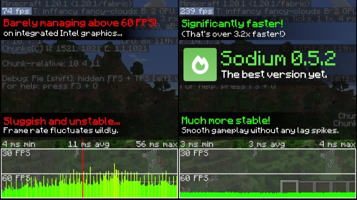

About This Mod
Sodium is one of the best FPS boost mods for Minecraft Java Edition. It improves performance, reduces lag and gives smoother gameplay.



Features
• Massive FPS Boost
• Better Rendering
• Smooth Gameplay
• Optimized Graphics
• Low-End PC Support
Credits:
Sodium Mod belongs to its respective creators.
Official Source: Modrinth